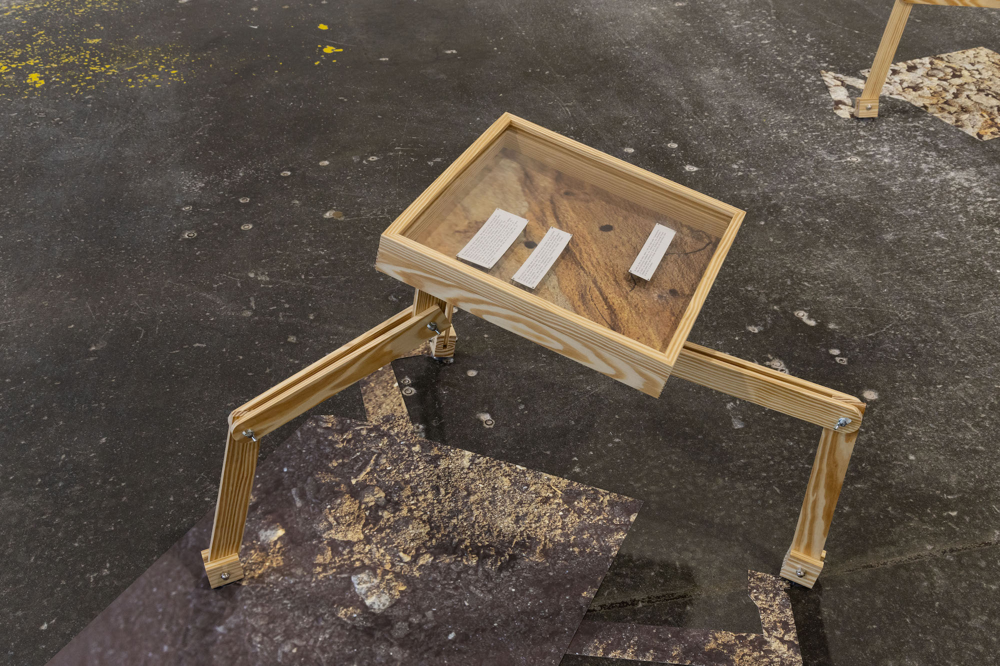

Paper, wood, digital print, hardware.
Meredith Emery is an interdisciplinary artist born in North Carolina and is currently a second year MFA Candidate at the University of Georgia. Emery works across sculpture, photography, print media, sound, and performance to investigate environmental concerns alongside collective systems of value, learning, and labor. She received her BFA in Studio Art from the University of North Carolina at Chapel Hill and has exhibited regionally in the southeastern US. She has been a resident at the Hambidge Center for Creative Arts, and a student at the John C. Campbell Folk School, as well as Penland School of Craft.
Meredith Emery is an interdisciplinary artist born in North Carolina and is currently a second year MFA Candidate at the University of Georgia. Emery works across sculpture, photography, print media, sound, and performance to investigate environmental concerns alongside collective systems of value, learning, and labor. She received her BFA in Studio Art from the University of North Carolina at Chapel Hill and has exhibited regionally in the southeastern US. She has been a resident at the Hambidge Center for Creative Arts, and a student at the John C. Campbell Folk School, as well as Penland School of Craft.